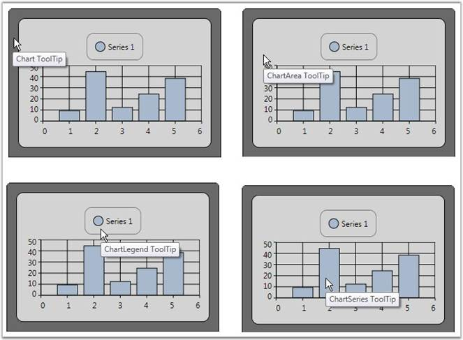
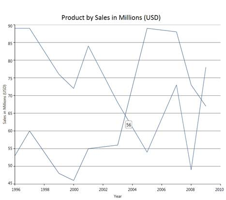
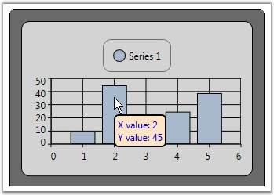

ToolTip can be shown on various sections of a chart control such as chart, chart area, chart legend and chart series. Refer the below code snippet for creating and assigning the tooltip to the chart.
|
[XAML]
<!-- Sets Tooltips for a chart--> <sf:Chart ToolTip="Chart ToolTip"> <syncfusion:ChartArea Margin="10" ToolTip="ChartArea ToolTip"> <syncfusion:ChartArea.Legend> <syncfusion:ChartLegend ToolTip="ChartLegend ToolTip" /> </syncfusion:ChartArea.Legend> <syncfusion:ChartSeries Label="Series 1" Data="1 10 2 45 3 13 4 25 5 39" ToolTip="ChartSeries ToolTip" IsIndexed="False"/> </syncfusion:ChartArea> </syncfusion:Chart> |
The following image illustrates the tooltip feature in various sections of the chart.

Figure 239: ToolTips on Different sections of a Chart
Default ToolTips for a Chart
Essential Chart for WPF is now enhanced with the ShowTooltip property, which allows ToolTips to be displayed.
Table 156:" Property Table
|
Name of property |
Description |
Type of property |
Value it accepts
|
Property syntax |
|
ShowTooltip |
Controls the visibility of ToolTips |
Dependency Property |
Bool or True/False. |
ShowToolTip="True" |
Setting a ToolTip for a Chart
To enable ToolTips for a chart, set the ShowTooltip property to True. The following code illustrates setting the ShowTooltip property.
|
[Xaml] <syncfusion:ChartSeries ShowToolTip="True"> |
|
[C#] Series.ShowToolTip = true; |

Figure 240: Chart with ToolTip
Custom ToolTip for a Series
You can set custom tooltips for the chart series. Associate a custom tooltip text with appealing appearance to the chart series using the following code snippet.
|
[XAML]
<Window.Resources> <!--Defining custom Tooltip in Resources--> <ToolTip x:Key="CustomToolTip"> <ToolTip.Template> <ControlTemplate> <Border CornerRadius="5" Background="Bisque" TextBlock.Foreground="Blue" Padding="3" BorderBrush="Black" BorderThickness="2"> <Grid> <Grid.RowDefinitions> <RowDefinition/> <RowDefinition/> </Grid.RowDefinitions> <Grid.ColumnDefinitions> <ColumnDefinition/> <ColumnDefinition/> </Grid.ColumnDefinitions> <TextBlock Text="X value: "/> <TextBlock Text="{Binding CorrespondingPoints[0].DataPoint.X}" Grid.Column="1"/> <TextBlock Text="Y value: " Grid.Row="1"/> <TextBlock Text="{Binding CorrespondingPoints[0].DataPoint.Y}" Grid.Column="1" Grid.Row="1"/> </Grid> </Border> </ControlTemplate> </ToolTip.Template> </ToolTip>
<!--Note: To have custom text alone a simple tooltip as below could be used <ToolTip x:Key="SimpleToolTip" Content="{Binding CorrespondingPoints[0].DataPoint.X}"/>-->
</Window.Resources> <!--Associate Custom ToolTip with ChartSeries--> <syncfusion:ChartSeries Label="Series 1" Data="1 10 2 45 3 13 4 25 5 39" ToolTip="{StaticResource CustomToolTip}" IsIndexed="False"/> |

Figure 241: Custom ToolTip Displaying the corresponding x and y values of a data point when mouse hovered